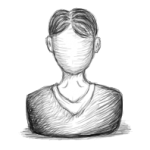

Palestrantes
class Palestrante
{
public function __construct($nome, $minibio, $ancora){
$this->nome = $nome;
$this->minibio = $minibio;
$this->ancora = $ancora;
}
static function pornome($p1, $p2) {
if ($p1->nome == $p2->nome) {
return 0;
}
return ($p1->nome > $p2->nome) ? +1 : -1;
}
public $nome;
public $minibio;
public $ancora;
}
$giovanni = new Palestrante(‘Giovanni Bassi’, ‘Programador, agilista, pai, filho, namorado, escalador, ciclista, provocador. Programa porque gosta, e começou a trabalhar com isso porque acha que trabalhar como administrador é meio chato. Por esse motivo sempre diz que nunca mais vai virar gerente de ninguém. E também porque acredita que pessoas autogerenciadas funcionam melhor e por acreditar que heterarquia é melhor que hierarquia. Mas isso é outro assunto. Foi reconhecido Microsoft MVP depois que alguém notou que ele não dormia a noite pra ficar escrevendo artigos, cuidando e participando do .Net Architects, gravando o podcast Tecnoretórica, escrevendo posts no blog e falando o que bem entende no twitter @giovannibassi. E por falar nisso é no twitter que conta pra todos que gerencia de projetos deve ser feita pelo time e não por um gerentes, que greves em TI são coisas sem sentido e que stored procedure com regras de negócio são malignas. Você já deve ter percebido (até porque está lá na primeira frase) que Giovanni é agilista. De tanto gostar disso ele trouxe os programas de certificação e treinamento PSD e PSM da Scrum.org pro Brasil, e por causa deles, do MVP e de algum trabalho que aparece tem que ficar indo pros EUA de vez enquanto, coisa que prefere não fazer. (É bem comum você ouvir ele perguntando porque a Scrum.org e a Microsoft não estão na Itália, por exemplo.) Ajudou a criar a Lambda3, que, apesar de ser pequena e de não ser muito comum no Brasil, insiste em fazer projetos e consultoria direito. Por causa da Lambda3 ele tem trabalhado mais do que quando era consultor independente, mas menos do que a maioria das pessoas. Quer dizer, isso se você considerar que os trabalhos junto à comunidade não são trabalho, caso contrário ele trabalha mais que a maioria das pessoas. Recentemente ele resolveu que merecia viver melhor e ganhar uns anos de vida e desistiu de ser sedentário. Começou a escalar, e agora está sempre com as mãos machucadas. Mas ainda dá pra programar. E agora resolveu pedalar e fica reclamando dos carros e do trânsito e da falta de ciclovias o tempo todo. Você encontra ele sempre em algum evento, como o TechEd, e o DNAD, mas também outros menos comuns para o pessoal do .NET, como a RubyConf. Nesses eventos, ou ele está vendo palestras, ou batendo papo com alguém, ou codando alguma aplicação que alguém achou que dava pra fazer durante o evento.’, ‘giovannibassi’);
$scaphe = new Palestrante(‘Felipe Oliveira’, ‘Aikidoísta, DJ e produtor e apaixonado por cinema, programo desde os 11 anos de idade e me esforço muito para não virar “nerdão”, mas tá complicado ! :) Hoje com 31 anos, acredito que consegui maturidade em design de software as custas de muita literatura, ralação e principalmente, abrir minha cabeça para outras linguagens, plaformas, culturas e estilos de desenvolvimento. Fundei recentemente a SOA|EXPERT, empresa especializada em repassar todo o conhecimento que absorvi em projetos e produtos SOA, mas continuo estudando diversos assuntos como: Event Model, Actors Model, Grid, MapReduce – Hadoop, NoSQL, CEP e assuntos mais Hardcore: VMs, HEC I/O, Dynamic Patching, Funções Matemáticas e etc. Como gosto realmente de estudar, então consegui uma forma de reumunerar, levando conhecimento às pessoas e isso me dá muito prazer !! Bom, pretendo fazer uma boa explanação sobre Arquitetura SOA, diferente de tudo que leram por aí e tentar despertar o bit para esse jeito bacana de fazer software.’, ‘felipeoliveira’);
$victor = new Palestrante(‘Victor Cavalcante’, ‘Victor Cavalcante é Microsoft MVP na tecnologia ASP.Net, trabalha com desenvolvimento web a 12 anos,é focado em padrões de desenvolvimento para web. Trabalha na Lambda3 (www.lambda3.com.br), empresa ágil que fundou com outros MVPs e amigos, e que insiste em fazer software certo. É ainda professor universitário e atua no grupo .NET Architects desde seu início. Acompanhe seu twitter para saber as novidades:@vcavalcante.’, ‘victorcavalcante’);
$papo = new Palestrante(‘José Papo’, ‘José Papo é Tech Evangelist da Amazon Web Services para a América Latina. Anuncia sempre novidades sobre a Amazon em seu twitter @josepapo e no blog em português da AWS: http://aws.typepad.com/brasil . É desenvolvedor de software e mestre em engenharia da computação. Também atua como professor de pós-graduação na PUC-SP.’, ‘josepapo’);
$elemar = new Palestrante(‘Elemar Jr’, ‘Arquiteto, programador, pai, enxadrista, louco e apaixonado por vinhos. Também gosta de filosofia e teologia. Conheceu o universo da computação bem cedo, por volta dos 9 anos. Aprendeu BASIC, Pascal, C e Assembly na adolescência. Apaixonado por MSX, escrevia várias vezes um mesmo programa por não ter grana para comprar um gravador de fita-cassete. Vendeu a alma ao diabo e se rendeu a linguagens como Clipper, COBOL e Visual Basic para poder pagar as contas. Sendo um cara de sorte, conseguiu arrumar quem o pagasse para escrever programas maneiros utilizando tecnologia de ponta. Aos 20 anos, passou a desenvolver softwares para projeto de ambientes 3D. Mais velho, e supostamente mais maduro, passou a trabalhar com outras tecnologias. Conheceu a internet, banco de dados, computação distribuída (e paralela). Hoje, trabalha com P&D na Promob Software Solutions. Há pouco tempo, honrado em ser reconhecido como Microsoft Visual C# MVP.’, ‘elemarjr’);
$quaglio = new Palestrante(‘José Otávio Quaglio’, ‘José Otávio Quaglio é Bacharel em Ciências da Computação pela Universidade Metodista de São Paulo, e MBA em Gerenciamento de Projetos pela Fundação Getúlio Vargas. Atualmente, ocupa o cargo de Arquiteto de Sistemas .NET e presta serviços em desenvolvimento de software para a Secretaria da Fazenda do Estado de São Paulo. Atua na área de projetos de software há 10 anos. Entusiasta de tecnologias, possui certificação Scrum Master pela Scrum Alliance e pela Scrum.org.’, ‘joseotavioquaglio’);
$doi = new Palestrante(‘Fabrício Doi’, ‘Fabrício Doi é Mestre em Engenharia de Computação pela Escola Politécnica da Universidade de São Paulo. Atualmente, ocupa o cargo de Arquiteto de Sistemas .NET e presta serviços em desenvolvimento de software para a Secretaria da Fazenda do Estado de São Paulo. Atua na área de projetos de software há 10 anos.’, ‘fabriciodoi’);
$juan = new Palestrante(‘Juan Lopes’, ‘Juan Lopes desenvolve softwares para tratamento de grandes volumes de dados e eventos complexos pela Intelie. Possui experiência profissional em C++, Java, C# e Ruby. Apaixonado por ciência da computação, busca o equilíbrio pragmático para transformar a teoria em aplicações práticas para o dia-a-dia como programador. É entusiasta de comunidades de software, participa frequentemente de coding dojos e contribui para projetos open source.’, ‘juanlopes’);
$carlucci = new Palestrante(‘André Carlucci’, ‘André Carlucci é desenvolvedor há 10 anos, organizador do grupo dotnetfloripa, co-fundador e Chief Happiness Officer da Way2 Technology. Formado em computação pela UFSC, trabalhou em grandes projetos de TI no Brasil e Europa. André é apaixonado por metodologias ágeis e não escreve uma linha de código sem testes.’, ‘andrecarlucci’);
$gui = new Palestrante(‘Guilherme Silveira’, ‘Líder técnico da Caelum, graduando em matemática aplicada na USP, ministrou diversas palestras relacionadas ao desenvolvimento na web. Junto com Paulo Silveira, criou o VRaptor em 2003. Atualmente tem o foco na implementação de integração de sistemas através de APIs rest e seu impacto positivo no plano de negócios dos clientes da Caelum e é commiter de projetos como restfulie, xstream, paranamer e waffle com ênfase em Java e Ruby. É também responsável pelo conteúdo técnico dos cursos.’, ‘guilhermesilveira’);
$gaigalas = new Palestrante(‘Alexandre Gaigalas’, ‘Desenvolvedor no Yahoo! Brasil, entusiasta de arquiteturas RESTful e Web Semântica.’, ‘alexandregaigalas’);
$sidney = new Palestrante(‘Sidney Lima Filho’, ‘Pensador, Aprendiz, Desenvolvedor, Gerente, Sonhador, exatamente nessa ordem. Atualmente é Gerente de Qualidade de Software na Reserve no Rio de Janeiro, com foco principal do seu trabalho na liderança de equipes, no coaching de métodos ágeis e em desenvolvimento de projetos web e mobile, em diversas linguagens e tecnologias. Iniciou sua carreira em TI no ano de 1998, desde então acredita que o software é um produto derivado da sinergia dos sonhos das pessoas, canalizada pela comunicação, materializada em imagens que agregam valor somente a quem sonhou junto. No desenvolvimento de software passou por tanto altos e baixos com os clientes sonhadores, onde aprendeu que responder as mudanças de escopo é mais importante do que entregar o que está escrito. Atua também em comunidades online de desenvolvimento e agilidade, escreve artigos para revistas e portais de TI, além de manter seu blog sidneyfilho.perto.vc’, ‘sidneylimafilho’);
$luisph = new Palestrante(‘Luís Fernandes’, ‘Luís Fernandes é diretor, master coach e head trainer da LPH. Possui mais de 10 anos de experiência no mercado de TI incluindo gestão, engenharia de software e treinamentos. Foca integralmente a mais de um ano em contribuir com o desenvolvimento pessoal e profissional das pessoas. É graduado em Processos Empresariais com ênfase em gestão pela FGV, é Master Coach formado pelo Center for Advanced Coaching, Executive Coach pelo Behaviour Coaching Institute e International Coaching Council, e Personal & Professional Coach pela Sociedade Brasileira de Coaching. É também formando PNL Practitioner pela Sociedade Brasileira de Programação Neurolingüística, e Certified Professional Behaviroral Analyst e Professional Values Analyst pela Sucess Insights International, além de MCT, PSM e CSPO.’, ‘luisfernandes’);
$vidal = new Palestrante(‘Rodrigo Vidal’, ‘Desenvolvedor apaixonado por software. F# MVP. Mestrando em Algoritmos e Métodos Numéricos. Trabalhando atualmente com pesquisa em paralelismo, GPU e reconhecimento de padrões em sistemas de tempo real. ‘, ‘rodrigovidal’);
$arr = array($giovanni, $scaphe, $victor, $papo, $elemar, $quaglio, $doi, $juan, $carlucci, $gui, $gaigalas, $sidney, $luisph, $vidal);
usort($arr, array(‘Palestrante’, ‘pornome’));
foreach ($arr as $palestrante)
{
$content = “
“;
echo $content;
}
?>
